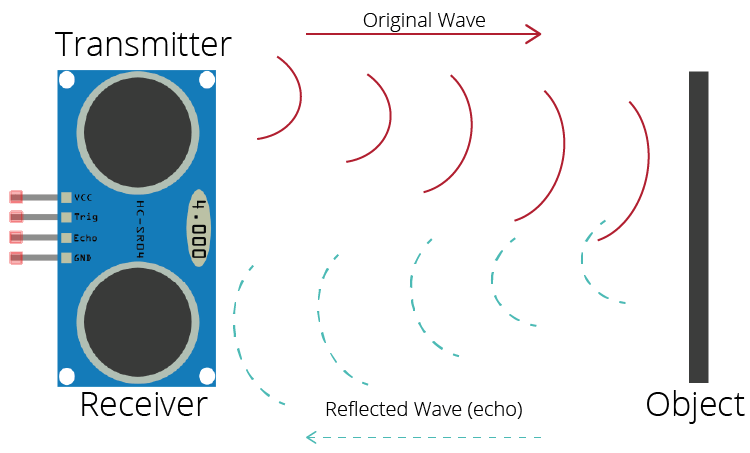

Présentation
Le capteur à ultrasons permet de mesurer la distance entre un objet et le capteur.
Il peut être utilisé avec une carte Arduino dans différents projets
Caractéristiques
- Nom : HC-SR04
- Alimentation : 5V
- Nombre de broches : 4
- Mesure de distance
Fonctionnement
Le capteur à ultrasons HC-SR04 possède un émetteur et un récepteur.
L'émetteur envoie des ultrasons grâce à la broche TRIG. Les ondes se réfléchissent sur un objet.
La broche ECHO reçoit le signal de retour. Arduino mesure le temps et calcule la distance.

Mon quizz
Teste tes connaissances sur le capteur à ultrasons.
Accéder au quizz